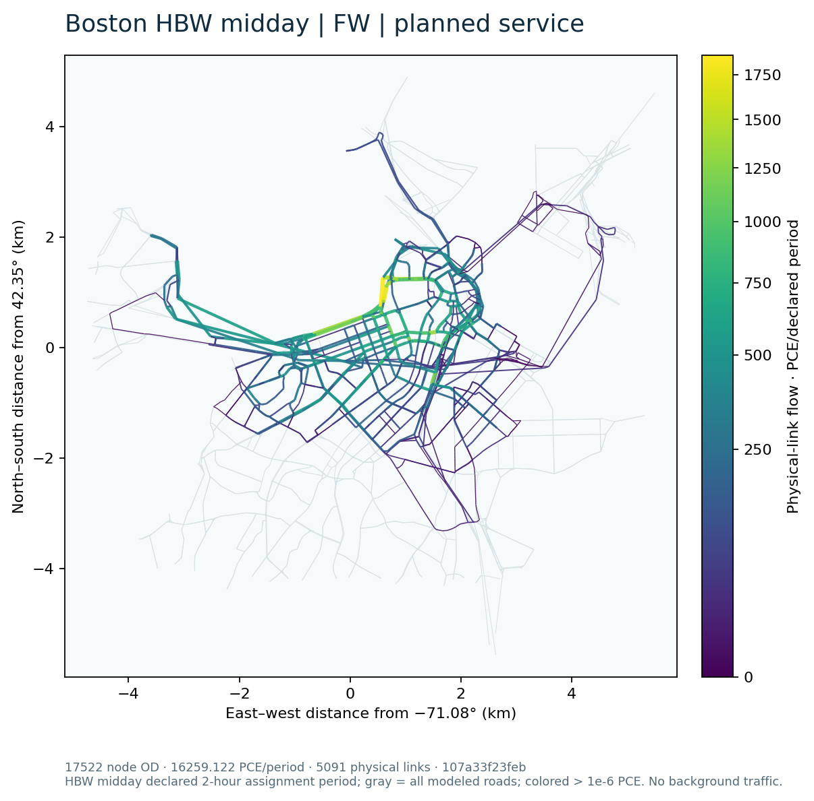

Boston case · GMNS, four stages, GPS and assignment methods
Boston is the real-city instance of the shared framework. Its separate public branches are (1) the accepted semantic S1/S2 service-feedback example, and (2) the conditional absolute-attribute ABS_PLANNED / ABS_OBS_EXPLORATORY sensitivity, including the fixed ABS_PLANNED FW/full-path/native-L3 comparison. They share the physical network but not the same demand identity. Start at the project homepage.
What this case now demonstrates
GMNS exchanges and layer relationships; the retained four-stage/GPS service-feedback chain; fixed conditional absolute choice; controlled FW/full-path/native-L3 comparisons; and new-input FW on 500, 2,000 and all 30,790 source-zone OD tiers. No Boston CG case result is included.
The largest accepted FW calculation has 17,522 loaded node OD, 16,259.122 PCE trips, 133 endpoints and 2,147 positive links. Expanded full-path/L3 were resource-gated; the accepted rank-26/52 control is still the separate 26-OD instance. Full scale and resource details.

Instance & GMNS Structure
The Central Boston analysis network has 2,852 physical nodes, 5,091 directed physical links, 177 H3 r9 zones and nine r7 parents. The GMNS in Action diagrams and record-level read-only query explain source H3 IDs, exported zone/centroid/access mapping, nonphysical connectors, physical link IDs, observation references and saved results. The pinned reader checked node/link/demand separately from the zone schema; source capacities and effective two-hour solver capacities have separate fields. Inspect the actual exchange.
Trip Generation
Area-allocated ACS household estimates and transferred regional rates produce 816,054.67 modelled workday person trips across six purposes. MassGIS activity weights supply attraction context. This is not observed traffic or the 203.66 vehicle trips assigned in the conditional fixed panel. Saved generation chart and table.
Trip Distribution
Gravity/IPF and purpose/time conversion produce directed H3 OD. The saved 177 × 177 HBW midday matrix totals 22,807.22 modelled person trips. The later 36-pair × three-departure panel is a declared selection, not a mass-conserving load of the whole region. Distribution evidence.
Mode Choice
The earlier semantic example uses regional S1 shares and an OD-specific nested response to a service change. The newer conditional absolute-attribute evaluator computes DA/S2/S3/TW probabilities for sufficient-vehicle households from actual OD time/distance/fare attributes. It evaluated 87 of 108 fixed objects; 21 retained unknown inputs. Only 78 common objects and 26 physical endpoint OD pairs were road-loaded. This is a reduced sensitivity, not a complete calibrated TDM23 model. Selected probabilities and parameters.
Traffic Assignment
The semantic S1/S2 panel uses the existing static FW solver at about 202.078384 / 202.070733 vehicle trips; its saved maps and service-response interpretation stay here. The separate conditional ABS branch has saved FW values 707.0579230712884 (planned, 203.6604786350987 trips) and 707.043586277782 (exploratory observed-service input, 203.6573680559407 trips) vehicle-minutes. These are scenario-specific model outputs, not causal GPS measurements.
On the exact ABS_PLANNED network/demand/BPR/pool instance, the static assignment comparison exposes actual FW source/result, the solved 130-path uncompressed reference, and both accepted native Diagnostic L3 rank 26 and rank 52 outer-02 path/OD/link results. Five same-instance physical-link maps and a full-precision join table are included there and shown on both project homepages. Native results pass recorded numerical tolerances but are not exact feasible equilibria or an acceleration claim.
Observations & Feedback
The GMNS route-60 figure shows the same saved 12 source positions before and after path association, with 26 ordered physical-link occurrences and a separate S1 road-result lookup. It is not the route-749 numeric event. In the separate service-feedback trace, route 749 direction 1 stop pair 1788 → 5093 has 86 s sample-derived versus 180 s planned; the declared exploratory input changes itinerary time, mode response, vehicle demand and FW link flows. All 13 interval adjustments are off by default; no independent AM forecast validation is claimed. Follow the saved trace.
Experiments & Reproduction
- Semantic four-stage/GPS saved example, including a read-only query database.
- Conditional probabilities, source scope and ABS_OBS FW result.
- FW / finite-path / native-L3 same-instance comparison, figures and limits.
- Shared method implementation and optional native reproduction boundary.
python -B tools/gmns/trace_gmns_figure.py --help
python -B tools/mcl_results.py list --case boston
python -B tools/mcl_results.py verify-saved --run boston-abs-planned-l3-rank26-outer02
These are help/read-only saved-record operations; no model is solved by opening this case.